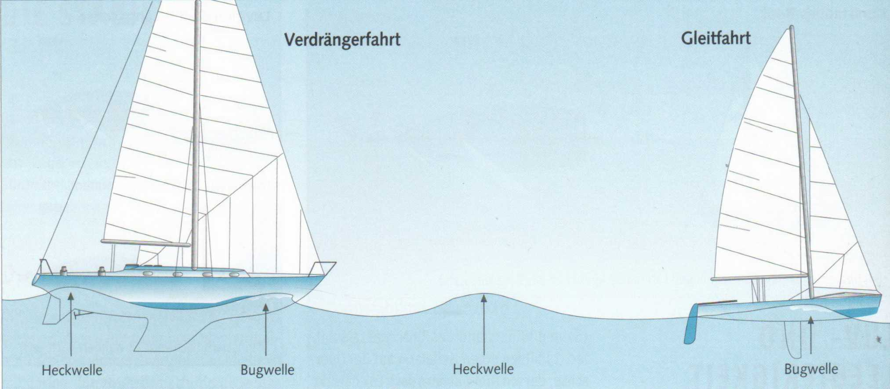

Jedes Schiff hat eine rechnerisch zu ermittelnde Rumpf- oder Grenzgeschwindigkeit. Sie ergibt sich aus der Länge der Wasserlinie. Man rechnet:
► Wurzel aus der Wasserlinienlänge in Metern x 4,5 = Geschwindigkeit in Stundenkilometern (km/h).
► Wurzel aus der Wasserlinienlänge in Metern x 2,43 = Geschwindigkeitin Knoten (kn) = Seemeilen pro Stunde.
Hat beispielsweise eine Kielyacht eine Wasserlinienlänge von 9 m (2,43 X s 9), so liegt die höchste erreichbare Geschwindigkeit bei 7,3 kn. Ihre Rumpfgeschwindigkeit erreichen Kielboote meist nur unter idealen Voraussetzungen.
Ob ein Schiff seine Rumpfgeschwindigkeit läuft, ist leicht zu erkennen. Der Rumpf liegt dann in einem ausgeprägten Wellental, eingebettet zwischen Bug- und Heckwelle. Mehr Antriebskraft - sei es durch Segel oder Motor - macht das Boot kaum schneller. Sie erzeugt nur eine höhere Heckwelle, an der sich das Heck gefährlich festsaugt, und ein tieferes Wellental.
Man spricht in diesem Fall von einem Verdränger und Verdrängerfahrt. Das Boot verdrängt eine Wassermenge, deren Gewicht gleich seinem eigenen Gewicht ist.
► Ein Verdränger bleibt immer in seinem eigenen Wellensystem gefangen.
Leichte Boote hingegen, Jollen mit einer entsprechend ausgelegten flachen Bodenform, können ihrem Wellensystem entrinnen. Zwar macht sich auch bei ihnen ein erhöhter Widerstand bemerkbar, wenn sie ihre Rumpfgeschwindigkeit erreichen, aber sie überwinden diesen kritischen Punkt. Sie schieben sich auf ihre Bugwelle und lassen ihre Heckwelle hinter sich: Sie gleiten.
Je weiter die Heckwelle achteraus wandert, umso höher ist die Gleitfahrt.’Ermöglicht wird sie durch einen teilweise dynamischen Auftrieb unter dem Bootsboden, der den Bug trägt. Ein Boot in Gleitfahrt wird also leichter, es verdrängt weniger Wasser als seinem Gewicht entspricht. Gleichzeitig verringert sich die vom Wasser benetzte Rumpffläche und damit der Reibungswiderstand.
► Ein Gleitboot kann ein Mehrfaches seiner Rumpfgeschwindigkeit erzielen.
Gleiten ist nicht zu verwechseln mit Surfen, einem zeitweiligen Reiten auf einem Wellenhang. Auch dabei wird die Rumpfgeschwindigkeit überschritten. Ins Surfen können auch größere Kielyachten kommen.